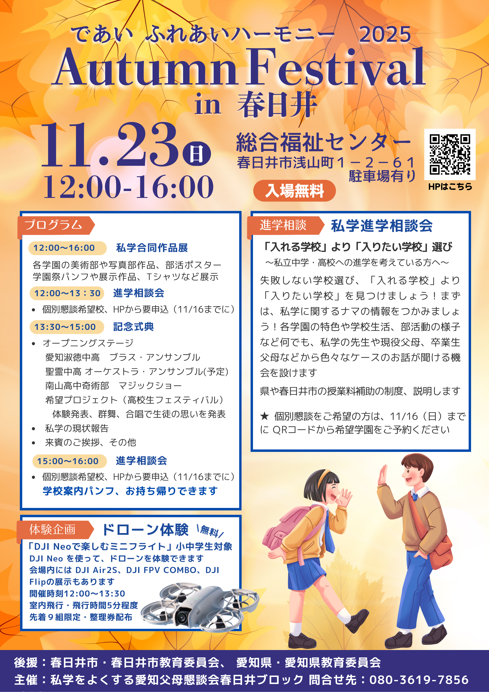

2025 Autumn Festival in 春日井
開催情報
日時：2025年11月23日（日） 12:00〜16:00
会場：総合福祉センター（春日井市浅山町1-2-61）
[MAP]
入場：入場無料（駐車場あり）
プログラム
-
12:00〜16:00
私学合同作品展（美術部・写真部作品、部活ポスター、学園案内パンフや展示作品、Tシャツなど展示）
-
12:00〜13:30
進学相談会（個別懇談 希望校／要申込）
-
13:30〜15:00
記念式典
- オープニングステージ
- 愛知淑徳高等学校 ブラス・アンサンブル
- 聖霊高等学校 オーケストラ・アンサンブル（予定）
- 南山高等学校 奇術部 マジックショー
- 希望プロジェクト（高校生フェスティバル）
- 体験発表（群舞・合唱など、生徒の想いの発表）
- 私学の現状報告
- 来賓のご挨拶 ほか
-
15:00〜16:00
進学相談会（個別懇談 希望校／要申込）／
学校案内パンフはお持ち帰りいただけます
進学相談・私学進学相談会
「入れる学校」より「入りたい学校」選びへ。まずは私学に関するナマの情報をつかみましょう。
学費制度や奨学金、校風・活動、卒業生や保護者のケース紹介など、多面的に進学情報を提供します。
★ 個別懇談をご希望の方は、11/16（日）までに下記フォームから希望学園をご予約ください。
体験企画：ドローン体験（無料）
「DJI Neo で楽しむミニフライト」小学生対象。会場内では DJI Air2S、DJI FPV COMBO、DJI Flip の展示もあります。
開催時間：12:00〜13:30 ／ 飛行時間：各回5分程度 ／ 定員：先着9組限定（整理券配布）
学校案内パンフレット
参加校のパンフレットを多数ご用意しています。ご自由にお持ち帰りください。
